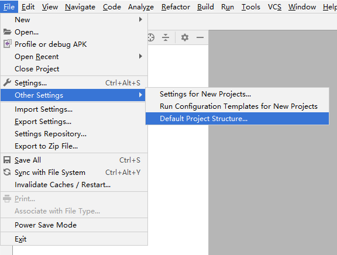
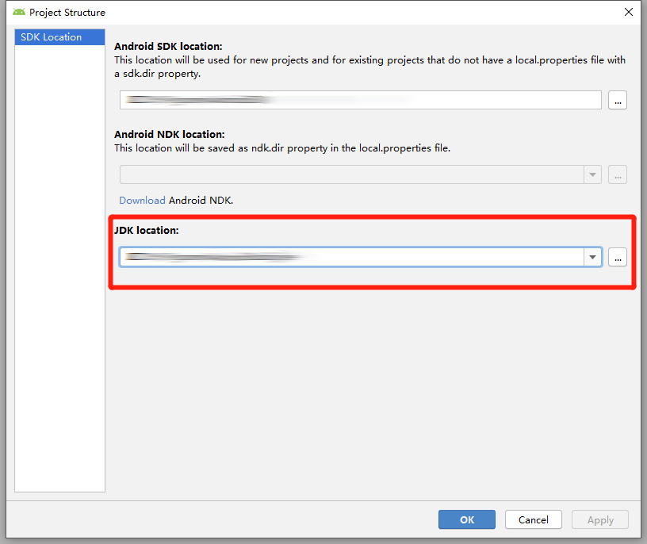

参考了Flutter中文网的这篇文档发布Android版APP，对其中一些错误做了修正。（我的方法只是经我实践得出的可行解，而非标准解）
查看默认应用程序清单文件(位于<app dir>/android/app/src/main/中的AndroidManifest.xml文件)，并验证这些值是否正确，特别是：
application: 编辑 application 标签， 这是应用的名称。uses-permission: 如果您的应用程序代码不需要Internet访问，请删除android.permission.INTERNET权限。标准模板包含此标记是为了启用Flutter工具和正在运行的应用程序之间的通信。查看默认[Gradle 构建文件][gradlebuild]”build.gradle”，它位于<app dir>/android/app/，验证这些值是否正确，尤其是：
defaultConfig:
当一个新的Flutter应用程序被创建时，它有一个默认的启动器图标。要自定义此图标：
<app dir>/android/app/src/main/res/目录中，将图标文件放入使用配置限定符命名的文件夹中。默认mipmap-文件夹演示正确的命名约定。AndroidManifest.xml中，将application标记的android:icon属性更新为引用上一步中的图标（例如 <application android:icon="@mipmap/ic_launcher" ...）。如果您有现有keystore，请跳至下一步。如果没有，请在<app dir>/android/app目录下，通过在运行以下命令来创建一个：keytool -genkey -v -keystore key.jks -keyalg RSA -keysize 2048 -validity 10000 -alias key
注意: keytool可能不在系统路径中。它是Java JDK的一部分，它是作为Android Studio的一部分安装的。有关具体路径，可参照如下方法：
打开Android studio

红框中的就是JDK所在的目录

我们所需要的keytool在JDK目录下的bin文件夹中。为了便于日后的使用，可将<jdk dir>/bin添加到环境变量
创建一个名为<app dir>/android/key.properties的文件，其中包含对密钥库的引用：
storePassword=<password from previous step>
keyPassword=<password from previous step>
keyAlias=key
storeFile=key.jks
注意: 保持文件私密; 不要将它加入公共源代码控制中。
通过编辑<app dir>/android/app/build.gradle文件为您的应用配置签名
替换:
android {
为：
def keystorePropertiesFile = rootProject.file("key.properties")
def keystoreProperties = new Properties()
keystoreProperties.load(new FileInputStream(keystorePropertiesFile))
android {
替换:
buildTypes {
release {
// TODO: Add your own signing config for the release build.
// Signing with the debug keys for now, so `flutter run --release` works.
signingConfig signingConfigs.debug
}
}
为:
signingConfigs {
release {
keyAlias keystoreProperties['keyAlias']
keyPassword keystoreProperties['keyPassword']
storeFile file(keystoreProperties['storeFile'])
storePassword keystoreProperties['storePassword']
}
}
buildTypes {
release {
signingConfig signingConfigs.release
}
}
现在，您的应用的release版本将自动进行签名。
默认情况下flutter不会开启Android的混淆。
如果使用了第三方Java或Android库，也许你想减小apk文件的大小或者防止代码被逆向破解。
创建 <app dir>/android/app/proguard-rules.pro 文件，并添加以下规则：
#Flutter Wrapper
-keep class io.flutter.app.** { *; }
-keep class io.flutter.plugin.** { *; }
-keep class io.flutter.util.** { *; }
-keep class io.flutter.view.** { *; }
-keep class io.flutter.** { *; }
-keep class io.flutter.plugins.** { *; }
上述配置只混淆了Flutter引擎库，任何其他库（比如 Firebase）需要添加与之对应的规则。
打开 <app dir>/android/app/build.gradle 文件，定位到 buildTypes 块。
在 release 配置中将 minifyEnabled 和 useProguard 设为 true，再将混淆文件指向上一步创建的文件。
android {
...
buildTypes {
release {
signingConfig signingConfigs.release
minifyEnabled true
useProguard true
proguardFiles getDefaultProguardFile('proguard-android.txt'), 'proguard-rules.pro'
}
}
}
使用命令行:
cd <app dir> (<app dir> 为您的工程目录)。flutter build apk (flutter build 默认会包含 --release选项)。打包好的发布APK位于<app dir>/build/app/outputs/apk/app-release.apk。
如果提示Error: Unable to find git in your PATH，则将<git dir>/mingw64/libexec/git-core和<git dir>/bin添加到系统环境变量的path中，然后重启电脑。